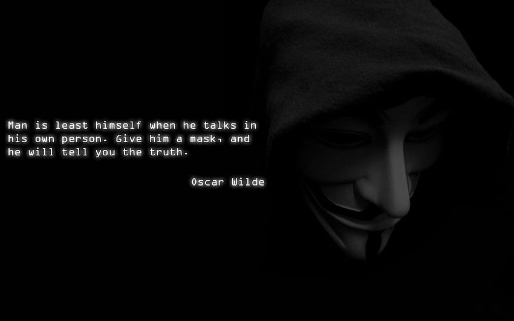

Quicksilver-lab
Quicksilver-lab is my dedicated workspace where creativity and innovation thrive. It serves as the hub for all my projects, from web development to automation tools, ethical hacking, and AI-driven applications. At Quicksilver-lab, I explore new ideas, carry out experiments, and push the boundaries of technology to create unique and impactful solutions. Each project is a step toward refining my skills and contributing to the tech community with meaningful innovations
QuickSilver
QuickSilver is a tech innovator, ethical hacker, and creator with a passion for pushing the limits of what's possible. Known for a sharp mind and exceptional skills in web development, cybersecurity, and software engineering, QuickSilver takes on complex challenges and turns them into functional, creative solutions. As the founder of Quicksilver-lab, I specialize in a diverse range of projects, from automation tools to interactive applications, all while maintaining a strong commitment to ethical hacking and digital security. My work isn't just about creating—it's about solving real-world problems with cutting-edge technology.
The Internet is the new battleground of Earth, the wild wild West, the home of outlaws, and the place where freedom lives or dies.
Embrace the challenge, push the boundaries, and let curiosity lead the way.
Innovative Solutions
At Quicksilver-lab, we specialize in creating cutting-edge solutions that push the boundaries of technology. Our projects aim to tackle complex challenges with creativity and precision, ensuring impactful results. We are dedicated to exploring new frontiers and delivering high-quality, innovative solutions.
Advanced Techniques
We employ advanced techniques and methodologies to develop robust and efficient systems. Our expertise ranges from ethical hacking to sophisticated software development, providing us with a unique edge in solving intricate problems. We continuously refine our skills to stay ahead in the rapidly evolving tech landscape.
Collaborative Approach
Collaboration is at the heart of our process. We work closely with clients and partners to understand their needs and deliver tailored solutions. Our collaborative approach ensures that every project benefits from diverse perspectives and expertise, leading to more effective and innovative outcomes.
Robust Security Measures
Security is a top priority in all our projects. We implement rigorous security measures to protect sensitive information and maintain the integrity of our systems. Our commitment to security ensures that our solutions are not only effective but also safe and reliable for our clients.
Continuous Improvement
We believe in the power of continuous improvement. By regularly updating and refining our projects, we ensure they remain at the forefront of technology and meet evolving user needs. Our dedication to excellence drives us to constantly enhance our solutions and deliver superior results.